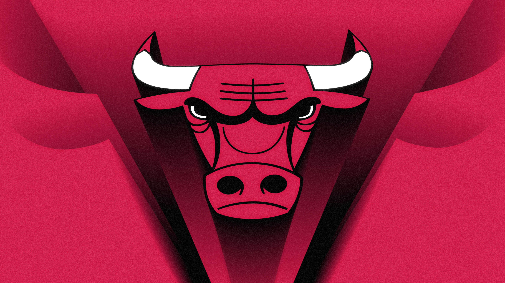

- 

Una de mis aficiones es la de poder editar y grabar videos y poder subirlo a la plataforma de Youtube, desde muy pequeño eh tenido esa afición de editar videos, una de mis idolos es "German Garmendia: Hola soy german" ya que desde niño me gustan sus videos y me gusta su humor.
Me considero una persona que respeta cada gusto musical de los demas, pero aun asi me siento afectado cuando alguien habla mal de mis gustos, actualemente no tengo un genero que me guste, me gustan todos los generos, me gusta un poco de todo siento que si uno disfruta la musica no importa el genero.
Algo que siempre me ha encantado son los videojuegos han sido algo muy especial desde mi infancia, y con solo ver el juego de super mario me trae nostalgia, otro juego que me trae recuerdos es Crash Bandicoot ya que lo juegaba mucho de niño con mis hermanos.
Me gusta mucho aprender en libros ya que al leer aprendo cosas nuevas que uso diariamente, los libros son muy bonitos para aprender cosas nuevas tanto historias como aprendisaje en finansas las cuales me gustan mas, uno de mis libros favoritos es"Padre rico, padre pobre", el cual enseña porque algunos son mas ricos y algunos mas pobres y es por el aprendisaje que tiene uno y lo que nos enseñan.
Soy un chico de 16 años de edad, actulmente estudiando la carrera de Bachillerato en Computacion, soy una persona alegre, me gusta el cafe, me gusta la musica y los videojuegos, me gusta aprender cosas nuevas, me gusta aser deportes, actualmente se jugar "Baquetboll","voleibol"; me gusta tabien cocinar, desde niño me a gustado cocinar, tengo muchas avilidades las cuales son: peluqueria, postreria, tanbien e estudiado electrcidad,se aser muebles de maderas, se un poco de mecanica, y de medicina.

Me gustaría tener la habilidad de poder desarrollar una pagina web tan claras y concisas como en la actualidad.

Me gustaría aprender a hacer videojuegos con ecenarios ficticios y que mi unico limite sea mi imaginación.

Tener la habilidad de poder utilizar bien los comandos en arduino y tambien poder ser un buen electronico.